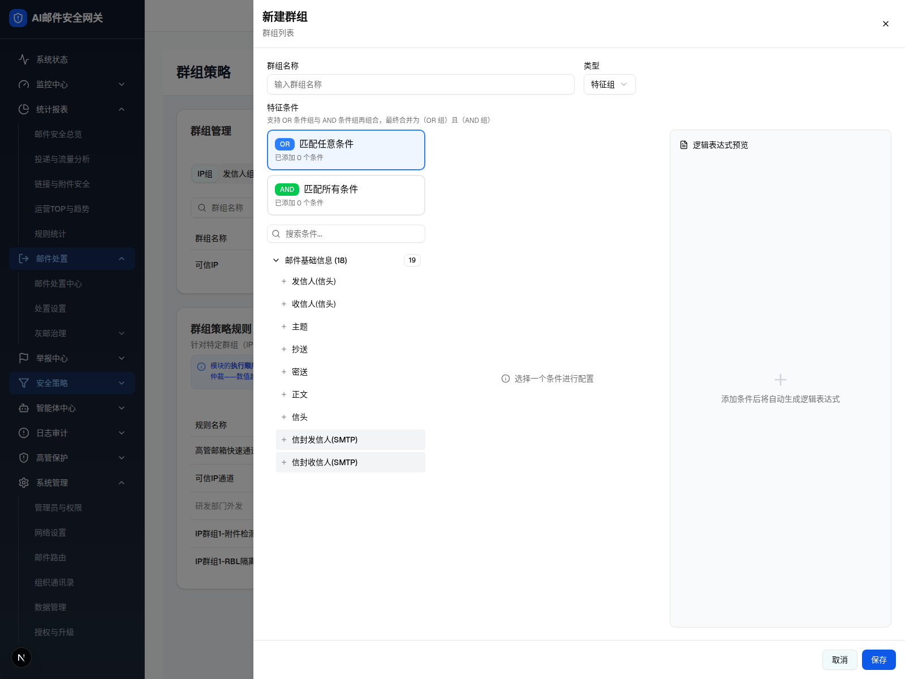

| 所属组件 | 2.1 群组管理卡片 GroupManagementCard |
| 主文件 | filter-rules-group-policy/index.html |
| 触发路径 | 层级1 普通组抽屉 → 类型 Select 切为「特征组」（或特征 Tab 点新建/编辑） |
| demo 源 | group-policy-page.tsx GroupDrawer isFeature 分支 L1492-L1504；ConditionsEditor（advanced-filter-rules-module） |
触发路径：普通组抽屉内类型下拉选「特征组」→ isFeature=true，抽屉切宽屏、成员 Textarea 换为条件编辑器
条件编辑器为静态快照（ConditionsEditor 深交互属高级过滤规则模块，本层展示其在特征组抽屉中的挂载形态）
群组列表
支持 OR 条件组与 AND 条件组再组合，最终合并为（OR 组）且（AND 组）
添加条件后将自动生成逻辑表达式

| 元素 | 说明 |
|---|---|
| 抽屉宽度 | max-w-6xl（宽屏，容纳条件编辑器） |
| 群组名称 / 类型 | 同普通组；类型已选「特征组」（isFeature=true） |
| 特征条件 | Label + 说明「支持 OR 条件组与 AND 条件组再组合，最终合并为 (OR 组) 且 (AND 组)」 |
| 条件编辑器 | 复用高级过滤规则 ConditionsEditor：OR「匹配任意条件」框 + AND「匹配所有条件」框 + 条件搜索 + 条件目录（邮件基础信息 18 项…）+ 右侧「逻辑表达式预览」 |
| 成员 Textarea | 特征组不渲染成员列表（!isFeature 条件） |
| 底部 | 取消 / 保存 → 特征组写回共享状态层，联动高级过滤规则「属于特征组」下拉 |
| 比对项 | demo 实际 DOM | 嵌入 spec 的 HTML | 是否一致 |
|---|---|---|---|
| 外层 | div.fixed.inset-0.z-50 | 改为 .gp-shell | ⚠ 有意差异 |
| 面板 | div.max-w-6xl（宽屏） | max-w-6xl | ✅ |
| 节点总数 | 181 | 181 | ✅ |
| 成员 Textarea | 特征组：未渲染 | 未包含 | ✅ |
| ConditionsEditor | 已挂载（OR/AND 组 + 条件目录 + 表达式预览） | 已包含（静态快照） | ✅ |